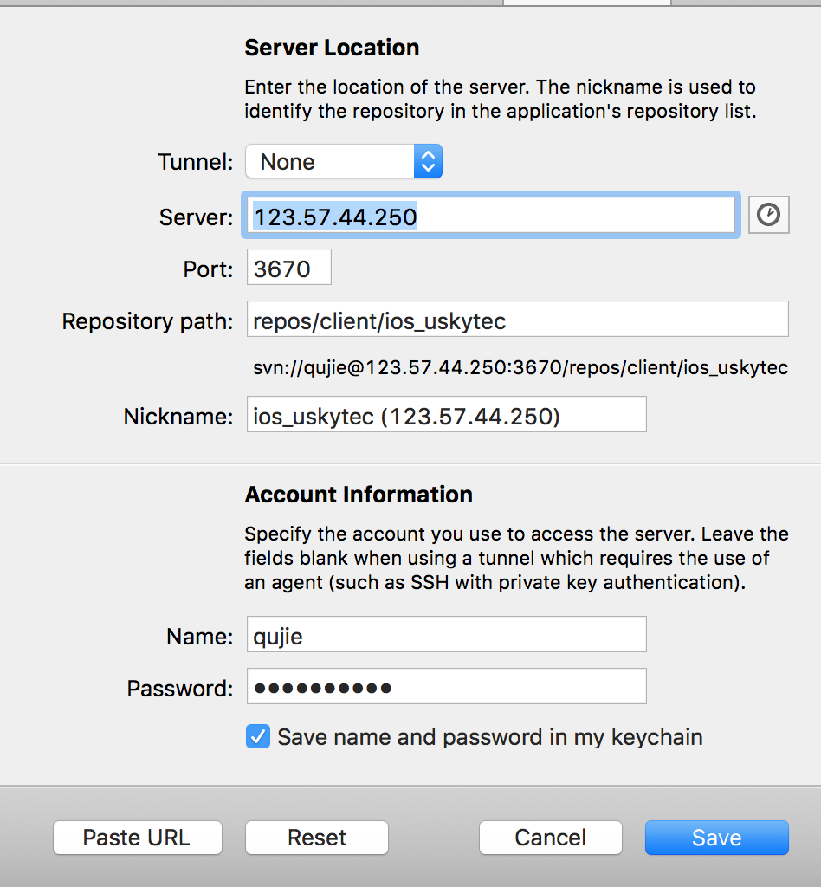

配制 
SVN 是集中式版本管理(即，每一步的操作都是直接提交到服务器)
是分布式管理，即在提交文件时，先是提交到本地代码仓库，然后需要时再提交到服务器上
Git的使用
把本地项目与github上的代码仓库关联，然后正常使用git来管理项目开发
本地项目 推送且同步到 github ，使用SSH
接下来执行下面的 命令
> cd 到指定的项目中
> git init // 在项目中创建仓库
> git add . // 把所有的文件代码都添加到暂缓区
> git commit -m "把所有文件及内容添加到本地仓库中"
> git remote add origin git@github.com:账号A/QJxxxDome.git // 项目关联github上的QJxxxDome仓库
问题：如果出现【fatal: remote origin already exists.】，
则先删除origin命令: git remote rm origin
查看配制：在~/.git/config内
> git pull --rebase origin master // 先拉取github数据,如：README.m
// 保守起见：等拉取完毕后再执行命令：
git add .
git commit -m ""
> git push origin master // 向github上仓库同步本地的仓库
问题：如果出现【remote: Permission to 793116483/QJxxxDome.git denied to 3075293910.
fatal: unable to access 'git@github.com:793116483/QJxxxDome.git/': The requested URL returned error: 403】
则说明：SSH 账号不对，没有访问权限；需要添加新的SSH Key ，添加完SSH key 后就再执行 push 推送
克隆 github上仓库代码到本地
git clone https://github.com/账号A/learnGit2
添加新的SSH Key
(1) 执行下面命令获取SSH的key值, rsa文件名(可以自定名称，下面每一步名称和填的内容都要改) ：
ssh-keygen -t rsa -C "your_email@email.com"
(2) 拷贝目录下文件内容(文件目录:~/.ssh/id_rsa.pub)
(3) 然后进入自己的github账号内，创建SSH Key
(4) 在 ~/.ssh/ 目录下创建 config 文件(没有时创建)
Host github.com
User yourGitAccount
Hostname ssh.github.com
PreferredAuthentications publickey
IdentityFile ~/.ssh/id_rsa
Port 443
1. 如果使用GIT，必须给GIT配制用户名 和 邮箱
> 给当前的git仓库配制用户名和邮箱
git config user.name "qujie"
git config user.email "xxx@qq.com"
> 配制全局的git仓库的用户名和邮箱
git config --global user.name "qujie"
git config --global user.email "xxx@qq.com"
> 查看所有配制
git config --list
2. cd 到指定项目目录下
cd ....
3. 初始化一个代码仓库
git init
4. 查看文件状态
git status
文件显示红色：表示该文件被创建或者修改，但还未添加到git的暂缓区
文件显示绿色：表示该文件在暂缓区，但还没有提交到本地git仓库
4. git 的项目文件操作
touch xxx.m : 创建文件
git add xxx.m : 将创建好的文件添加到暂缓区(还没有推送到git服务器上)
git commit -m "备注项目提交暂缓区的所有内容 到 git 本地仓库"
5. 创建分支
> 创建分支：git branch name
> 切换分支：git checkout name
> 查看分支：git branch
> 创建+切换分支：git checkout –b name
> 合并某分支到当前分支：git merge name
> 删除分支：git branch –d name
6. 还有其他命令
git mkdir qujieGit //版本库
cd qujieGit //到版本库目录下
git init // 让版本库可以成为管理git
git add 文件名 // 把文件添加到git暂存区内，注意：文件必须在qujieGit目录下
git commit -m "版本标签（修改内容取名，好可以找到对应的版本）" // 提交暂存区内的内容
git status // 查看文件版本状态，看是不是修改了内容的版本在暂存区内须要提交
git diff 文件名 //查看该文件中的内容与提交的内容有什么差别，修改了什么
git rm 文件名 // 删除一个文件
git checkout -- 文件名 // 回退文件与原先版本对比修改的内容(恢复功能)
git log // 查看提交版本的记录（当前版本的“历史”），后面可以再跟：--pretty=oneline（让提交的记录只显示和id）
git reset --hard HEAD^ // 回退到当前版本后的上一个版本，HEAD表示当前版本
git reset --hard HEAD~10 // 回退到当前版本后的第10个版本
git reflog // 查看删除的版本(也就是当前版本的“未来”)
git reset --hard id // id指版本的ID号如：commit bb5b5fa39459e3150137024959dfef8a5797f65e